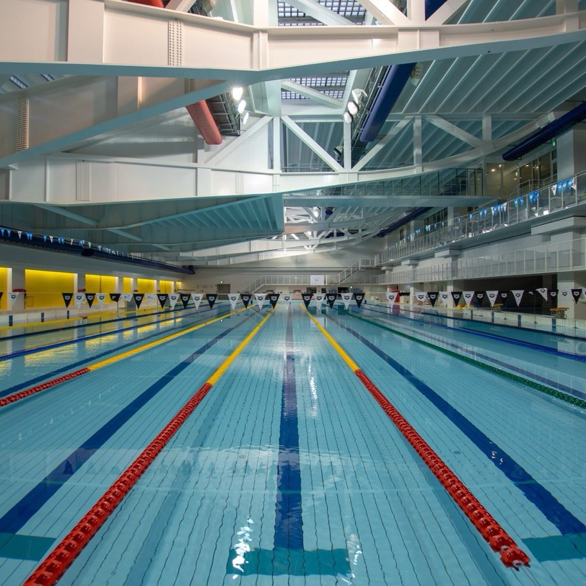
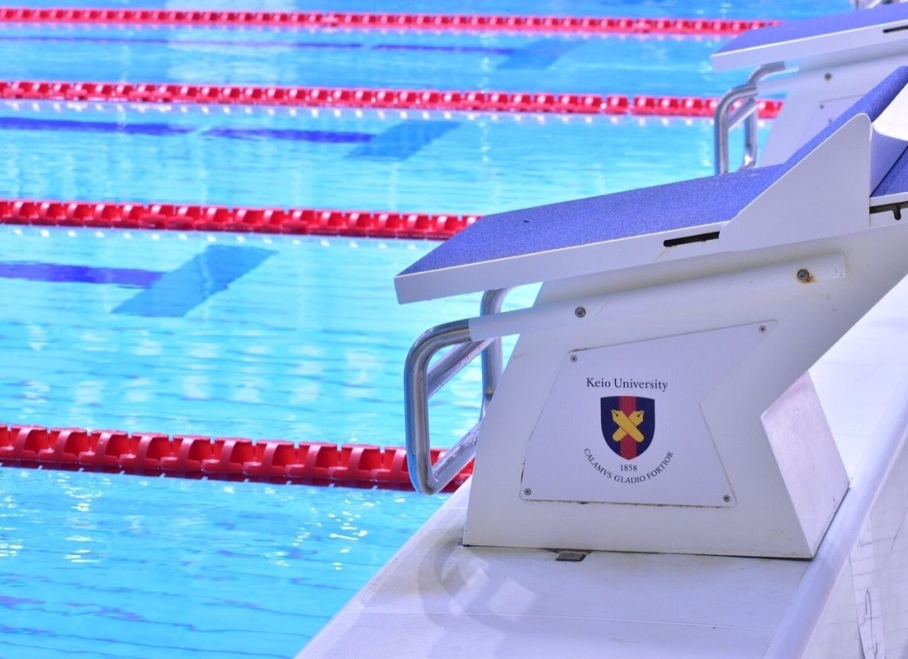
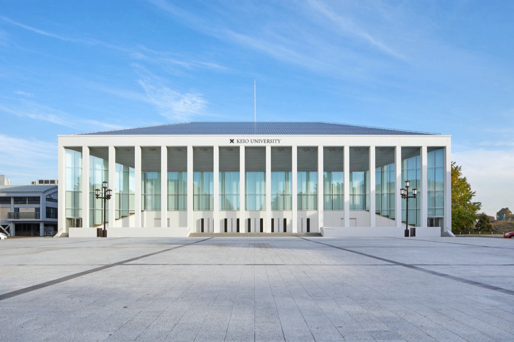
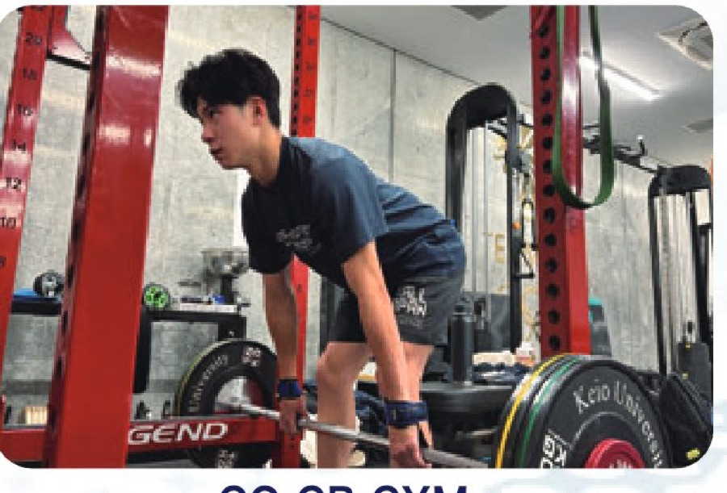
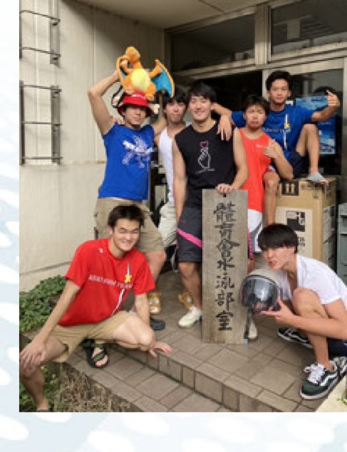
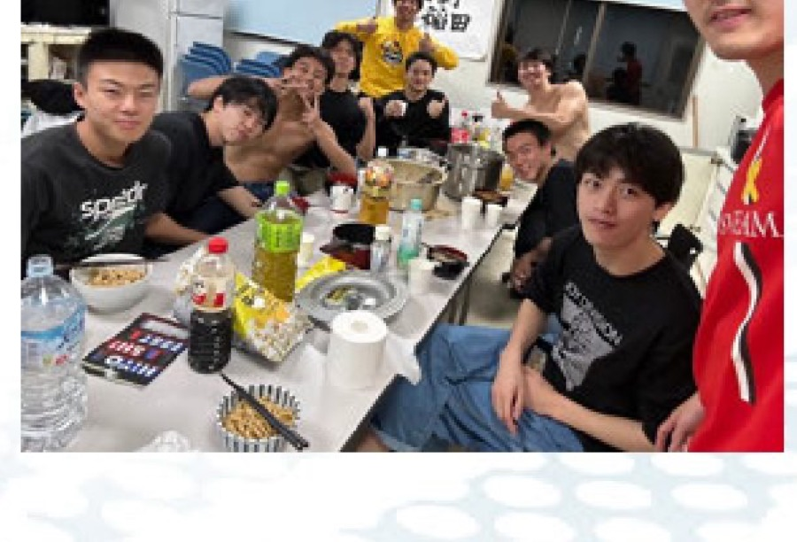

ベストが出た日は、全員が知っている
誰かが自己ベストを更新すると、プールサイドがざわつきます。学年も種目も関係なく騒ぐ。そういうチームです。
ABOUT US
日吉キャンパス完備の恵まれた環境と、学生主体の「自ら思考する」トレーニング体制。
01 / FACILITIES
練習拠点は日吉キャンパス協生館の地下一階。
日本水泳連盟公認の室内50mプールと、専用のウエイト施設が同じ敷地に揃っています。




日本水泳連盟公認の室内50mプール。可動床（2m）を備えており飛込練習も可能で、試合に近い条件のまま泳ぎ込めます。
プールは日吉駅のすぐそば。授業の合間にも足を運べるため、練習のために生活を削る必要がありません。
イギリス代表も使用するGBジムを利用。4年後にどうなりたいかから逆算し、基礎固めの期間と水中を意識する期間に分けて積み上げます。
02 / DATA & NUMBERS
競泳部門に在籍する51名の内訳です。
入試方式も学部も住まいもばらばらな部員が、同じプールで練習しています。
うち選手は男子34名・女子7名。男子・女子ともに高い目標を掲げ、同じプールで切磋琢磨する環境です。
約3人に1人が地方出身や一人暮らし・部寮生活。学業や自炊との両立もサポートします。
多様なバックグラウンドを持つ部員が切磋琢磨。一般入試・AO入試からの入部者も多数活躍しています。
文理問わず全学部の部員が在籍。授業スケジュールに応じた柔軟な練習体制で文武両道を実現しています。
03 / SUPPORT SYSTEM
練習は学生コーチを中心に、学生自身が組み立てます。
その主体性に、日本代表を見てきたコーチと医療・トレーナー陣が寄り添う——これが競泳部門の体制です。
学生主体の思考
「全社会の先導者たらんことを欲する」という慶應義塾の目的を体現する組織として、競泳部門は学生主体をテーマに活動しています。競技だけでなく、部の運営から年間の強化方針に至るまで学生が中心となって決めます。
幅広い競技レベルの選手が集まっているからこそ、レベルに囚われない多角的な議論ができる。自ら考え、議論し、取り組むことで、選手としてだけでなく一人の人間として大きく成長できます。
プロのバックアップ
ヘッドコーチの高城直基は、立石諒（ロンドン五輪 銅メダル）、山田拓郎（リオパラリンピック 銅メダル）の担当コーチを務めてきました。その知見は、答えを与えるためではなく、学生とコーチの思考の質を上げるために使われます。
さらにトレーナー、部活専属のドクター、理学療法士が選手一人ひとりに寄り添い、成長とコンディショニングを支えます。
COACHING

ヘッドコーチ
高校までの練習が「与えられたメニューをこなす」ものだったとすれば、 ここでの4年間は「自分の身体と対話しながらメニューを組み立てる」時間です。
動作解析にもとづくフォーム改善、レース局面ごとのラップ設計、 シーズンを通したピーキング。 身体特性と学業スケジュールに合わせて、個別にトレーニングを設計します。
※ コーチ略歴・指導実績は準備中です。
身体のスペシャリストからサポートを受けられる環境が整っています。対話を通じて、ドライ、ケア、体づくり、リハビリ、コンディショニングまで多岐にわたる助言を得られます。
04 / DAILY ROUTINE
朝練習が週4回、午後練習が週4回（ウエイトを含む）。
加えて任意練習の枠が2回あり、上記以外の時間でも練習回数を積めます。
| 時間 | 月 | 火 | 水 | 木 | 金 | 土 | 日 |
|---|---|---|---|---|---|---|---|
| 6:00–8:00 | 朝練 | — | 朝練 | 朝練 | — | 朝練 | 休養 |
| 9:00–12:00 | 講義 | 講義 | 講義 | 講義 | 講義 | 自習 | 自由 |
| 13:00–16:30 | 講義 | 自習 | 講義 | 講義 | 自習 | 自由 | 自由 |
| 17:00–19:30 | 練習 | ウエイト | — | 練習 | ウエイト | 練習 | 休養 |
| 20:00– | 課題 | 課題 | 課題 | 課題 | 自由 | 自由 | 翌週の準備 |
※ 試験期間・実習期間は練習を調整します。
05 / DORMITORY
競泳部門は合宿所（いわゆる寮）を持っており、希望する男子部員は入寮できます。
女子部員は実家または一人暮らしが基本ですが、慶應義塾が紹介する学生寮に入れる場合があります（入居人数に限りあり）。


光熱費まで込みで月28,000円。都内で一人暮らしをすることを考えれば、経済的な負担は大きく抑えられます。 浮いた時間とお金を、そのまま競技と学業に回せる環境です。
そして何より、朝練に向かうのも、課題に追われるのも、レースの後に悔しがるのも隣に仲間がいる。 寮での4年間は、記録以上に残るものになります。
05 / TEAM LIFE
速さの話ばかりしてきましたが、結局のところ4年間を決めるのは「誰と過ごすか」だと思います。
※ 写真は準備中です。
誰かが自己ベストを更新すると、プールサイドがざわつきます。学年も種目も関係なく騒ぐ。そういうチームです。
一般入試もFIT入試もAO入試も、現役も浪人も。出身地も高校も違う部員が、同じプールに集まっています。
福澤諭吉が説いた「独立自尊」は、自ら考え自ら決めるということ。それは練習メニューへの向き合い方そのものです。